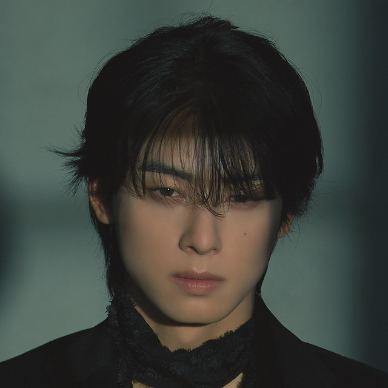
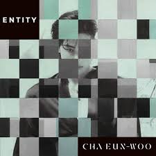

Inicio
Cha Eunwoo es un artista multifacético, conocido por su trabajo en la música, la actuación y el modelaje. Es integrante del grupo de K-pop ASTRO e hizo su debut como solista en febrero de 2024.
Biografía
Inicios
Cha Eunwoo, cuyo nombre real es Lee Dong-min, nació el 30 de marzo de 1997 en Gunpo, Gyeonggi, Corea del Sur. Desde una temprana edad, mostró un gran interés por las artes, particularmente en la música y la actuación. Asistió a la Escuela de Artes Hanlim, una prestigiosa academia en Corea del Sur que ha formado a muchos ídolos del K-pop. Durante sus años escolares, fue descubierto por la agencia de entretenimiento Fantagio, donde comenzó su entrenamiento como aprendiz en 2013. Antes de debutar como cantante, trabajó como modelo y realizó pequeños roles en comerciales y dramas de televisión.
Carrera en ASTRO
En 2016, Cha Eunwoo debutó como miembro del grupo de chicos ASTRO, bajo la agencia Fantagio. ASTRO se destacó rápidamente en la escena del K-pop debido a su imagen fresca y juvenil, así como por sus habilidades de baile y canto. Cha Eunwoo fue reconocido como el "rostro" del grupo, gracias a su destacada apariencia visual. ASTRO lanzó su primer mini-álbum titulado *Spring Up* el 23 de febrero de 2016, y el grupo ha seguido cosechando éxitos con canciones como *Blue Flame*, *Crazy Sexy Cool*, y *Knock*.
Carrera como Actor
Cha Eunwoo comenzó a hacer su transición a la actuación con pequeños papeles en dramas como *To Be Continued* en 2015. Sin embargo, su verdadera fama como actor llegó cuando protagonizó el drama *My ID is Gangnam Beauty* en 2018. El papel de Eunwoo como el personaje Do Kyung-seok, un estudiante universitario popular pero con un carácter distante, le valió elogios por su interpretación y consolidó su estatus como actor emergente. A partir de entonces, protagonizó otros dramas exitosos como *Rookie Historian Goo Hae Ryung* (2019) y *True Beauty* (2020), lo que aumentó aún más su popularidad en Corea del Sur y en el extranjero.
Carrera como Solista
Además de su trabajo con ASTRO, Cha Eunwoo ha explorado su carrera como solista. Ha lanzado canciones en solitario y participado en varias bandas sonoras de dramas en los que ha actuado. Su dulce y melodiosa voz ha cautivado a sus fans a través de canciones como *Rainbow Falling*, que formó parte de la banda sonora de *True Beauty*. También ha aparecido en programas de variedades, donde ha demostrado su versatilidad y encantos multifacéticos. Aunque sigue siendo un miembro activo de ASTRO, Cha Eunwoo continúa desarrollando su carrera como solista en la música y otros campos del entretenimiento.
Top Canciones
Top canciones más populares de Cha Eunwoo.
- Love so Fine
- STAY
- WHERE AM I
- You're the best
Último lanzamiento: STAY
Programas de Televisión y Películas
Cha Eunwoo ha participado en varios programas de televisión y películas, incluyendo:
- Wonderful World (2024)
- A Good Day to Be a Dog (2023)
- Island (2022)
- Decibel (2022)
- True Beauty (2020)
- My ID is Gangnam Beauty (2018)
- Rookie Historian Goo Hae Ryung (2019)